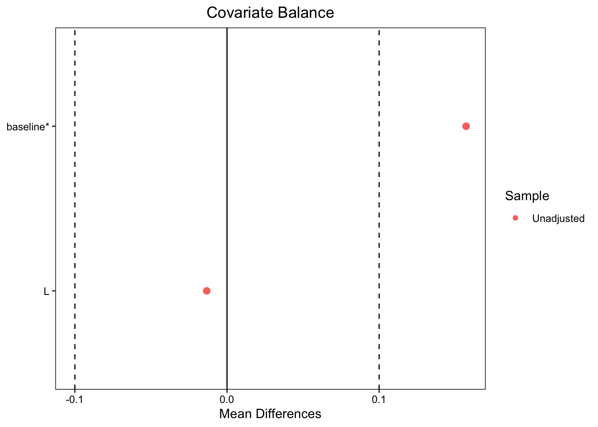

remotes::install_github("jtextor/dagitty/r")
library(dagitty)
library(ggdag)
library(tidyverse)
library(DT)
# usethis::use_github_pages("main") # Tell github to publish on github pagesCausal Effect Analysis of Baseline Change
The goal of this notebook is to demonstrate how to estimate treatment effects of a dichotomous (binary) treatment on change from a continuous baseline measure, such as in (Tennant et al. 2021). For example, suppose we want to estimate the effect of a new drug vs. placebo for reducing blood pressure after 6 months of use. Here, the blood pressure at treatment assignment is the baseline value and blood pressure measured 6 months after treatment assignment is the follow-up measure. There are two common approaches to analyzing the outcome: (1) Compare the difference in the follow-up measures between the experimental and control group; or (2) Compare the difference in change scores between the two groups, where a change score for an individual is the difference between the follow-up blood pressure and the baseline blood pressure.
We will use five increasingly complex data generating models to explore this problem:
- A ground truth model where the potential outcomes (the outcome measure under both treatment and control) are known for all participants.
- A Randomized Controlled Trial (RCT) with no loss to follow-up.
- An RCT with differential loss to follow-up.
- An observational study with treatment assignment confounding
- An observational study with treatment assignment counfounding and loss to follow-up.
We will also consider four causal estimands based on the two approaches discussed above:
The average treatment effect (ATE) on the outcome at follow-up, expressed as the difference between the outcome under treatment vs. control:
\[\mathrm{E}(Y_1^x) - \mathrm{E}(Y_1^{x'}) \tag{1}\]
Here, we use the potential outcomes notation, where \(Y_1\) is the follow-up outcome, \(x\) is the treatment, and \(x'\) is the control. \(Y_1^x\) represents the value that a participant would have if treated. Hence this effect estimate is the difference between the expected outcome if all patients in the study were treated and the expected outcome if all patients were not treated.The average treatment effect on the change score:
\[ \mathrm{E}(Y_1^x - Y_0^x) - \mathrm{E}(Y_1^{x'} - Y_0^{x'}) \tag{2}\]
This is the difference between the change score \(Y_1 - Y_0\) under treatment vs. control, where \(Y_0\) is the baseline score.The conditional treatment effect on the follow-up outcome, conditioned on the observed baseline value \(Y_0\):
\[ E[Y_1^x - Y_1^{x'} | Y_0 = y_0] \tag{3}\]
This estimand represents the effect of treatment on the part of the follow-up outcome that hasn’t already been determined by the baseline value.The conditional treatment effect on the change score, conditioned on the observed baseline value \(Y_0\):
\[ E[(Y_1^x - Y_0^x) - (Y_1^{x'} - Y_0^{x'}) | Y_0 = y_0] \tag{4}\]
This estimand represents the effect of treatment on the part of the change score that hasn’t already been determined by the baseline value. Note that because the change score includes the baseline value \(Y_0\), this estimand is equivalent to Equation 3.
Estimands vs Estimators
A causal estimand expresses the value that we wish to estimate. A statistical estimator is how we estimate that value. For any given estimand there are often multiple possible estimators, each with possible strengths and weaknesses. For example, with an RCT we can estimate ATE by subtracting the differences in the means of the outcome variable across the groups or by using linear regression or a number of other approaches.
There is considerable controversy in the literature over whether and when to use the difference in outcome at follow-up Equation 1 vs the difference in the change score Equation 2 as well as whether to adjust for baseline values. We will explore some of these issues below.
Model 1: Additive Treatment Effect, Potential Outcomes Known
The Causal DAG for the first and simplest model looks like this:
Code
# Create the DAG using dagify
dagMod1 <- dagify(
time1 ~ baseline + group + L,
change1 ~ baseline + time1,
exposure = "group",
outcome = "time1",
coords = data.frame(
name = c("baseline", "L", "group", "time1", "change1"),
x = c(0, 0, 4, 3, 1.5)*.5,
y = c(1, 2, 2, 1, 0)*.5
)
)
# Convert the dagitty graph to a ggdag group for prettier printing
tidy_dagMod1 <- tidy_dagitty(dagMod1)
# Plot with custom node shapes
# Get the status (exposure, outcome) information and set variables without a status to "observed"
status_dataMod1 <- ggdag_status(tidy_dagMod1)$data |>
mutate(status = ifelse(is.na(status), "observed", as.character(status)))
# Plot with custom node shapes while preserving status coloring
ggplot(status_dataMod1, aes(x = x, y = y, xend = xend, yend = yend)) +
geom_dag_edges(arrow_directed = grid::arrow(length = unit(0.5, "cm"), type = "closed")) +
geom_dag_point(aes(color = status), size = 24) +
geom_dag_text(color = "white") +
scale_shape_manual(values = c(circle = 16, square = 15), guide = "none") +
scale_color_discrete(name = "Status", na.value = "grey50") +
theme_dag() +
theme(legend.position = "right")The DAG uses common sense names instead of the typical variables used in potential outcomes:
\(Y_0\): baseline
\(Y_1\): time1 or change1 depending on which outcome we are interested in
\(X\): group where 0 is control and 1 is treatment
Now let’s simulate potential outcomes for the causal DAG shown above. In this simulation, the causal effect of treatment on time1 is 10, meaning that treated patients will see their baseline score increase by 10 plus a random amount of normally distributed noise with mean 0 and standard deviation of 3 (\(\mu = 0\), \(\sigma = 3\)), whereas control will see only the random change. The simulation calculates the potential outcomes time1_x0 and time1_x1 for all participants, where x1 is the outcome under treatment, and x0 under control. Likewise, the simulation also calculates potential outcomes of the change score: change1_x0, and change1_x1.
Finally, we use the potential outcomes for each participant to calculate the individual treatment effect for both time1 and change1. An individual treatment effect for a participant is the difference between that person’s outcome under treatment and outcome under control.
Data Generating Model
Here is the data generating model code:
# Set seed for reproducibility
set.seed(124)
# 150 participants
n <- 150
# Generate baseline scores
baseline <- rnorm(n, mean = 50, sd = 10)
# Set additive effect
additive_effect <- 10 # improvement of +10 to time1 for treatment group
# Generate a prognostic factor (L) - binary (0: favorable, 1: unfavorable)
L <- prognostic_factor <- rbinom(n, 1, 0.3)
baseline_outcome_effect <- 5 # Effect of prognostic factor on outcome: time1
# Calculate potential outcomes for time1 for all participants
# time1 under control adds a small amount of random noise, so on average there is no effect of control on the baseline value
time1_x0 <- baseline +
baseline_outcome_effect*L +
rnorm(n, mean = 0, sd = 3)
# time1 under treatment is on average 10 units higher than baseline
time1_x1 <- baseline +
additive_effect +
baseline_outcome_effect*L +
rnorm(n, mean = 0, sd = 3)
# Calculate potential outcomes for the change score
change1_x0 <- time1_x0 - baseline
change1_x1 <- time1_x1 - baseline
# Calculate individual treatment effects (ITE) for time1 and change1 for each participant
ite_time1 <- time1_x1 - time1_x0
ite_change1 <- change1_x1 - change1_x0
dataMod1 <- data.frame(
id = 1:n,
baseline = baseline,
L = L,
time1_x0 = time1_x0,
time1_x1 = time1_x1,
change1_x0 = change1_x0,
change1_x1 = change1_x1,
ite_time1 = ite_time1,
ite_change1 = ite_change1
)
datatable(dataMod1, options = list(pageLength = 10))In this data there is no variable for group, because we generated the potential outcomes for all participants under both control and treatment. We will use group in the next model to simulate treatment assignment for an RCT.
Summary Statistics
Let’s look at a summary of the data:
Code
library(gtsummary)
table1 <- dataMod1 |> select(-id) |> tbl_summary()
table1| Characteristic | N = 1501 |
|---|---|
| baseline | 50 (44, 57) |
| L | 43 (29%) |
| time1_x0 | 51 (45, 59) |
| time1_x1 | 61 (53, 68) |
| change1_x0 | 1.1 (-0.9, 3.6) |
| change1_x1 | 10.3 (8.4, 14.2) |
| ite_time1 | 9.0 (7.2, 12.7) |
| ite_change1 | 9.0 (7.2, 12.7) |
| 1 Median (Q1, Q3); n (%) | |
From the summary, we can see, as expected, that under treatment time1_x1 and change1_x1 are close to 10 points higher than control.
ATE on Follow-Up (Mean difference)
Since we have the potential outcomes for all patients we can calculate the Average Treatment Effect of the treatment on time1 (Equation 1) as the difference between the mean follow-up outcome between the treated and control groups:
po_estimate <- mean(dataMod1$time1_x1) - mean(dataMod1$time1_x0)
cat("Mean difference time1 (Treatment - Control):", round(po_estimate, 3), "\n")Mean difference time1 (Treatment - Control): 9.707 This is close to the true value of 10, but not perfect due to random noise added by the model and the relatively small sample size (150 participants).
ATE on Change Scores (Mean difference)
We can also compute the difference in change scores between the treated and untreated (Equation 5):
po_change1 <- mean(dataMod1$change1_x1) - mean(dataMod1$change1_x0)
cat("Mean difference change1 (Treatment - Control):", round(po_change1, 3), "\n")Mean difference change1 (Treatment - Control): 9.707 This is identical to the difference in follow-up outcomes. This is because with potential outcomes the baseline value under treatment and control for each patient is the same and hence cancel out across the two means below. To see this, we start with the estimand for the change score:
\[ \mathrm{E}(Y_1^x - Y_0^x) - \mathrm{E}(Y_1^{x'} - Y_0^{x'}) \tag{5}\]
Since
\[\mathrm{E}(X - Y) = \mathrm{E}(X) - \mathrm{E}(Y)\]
we can rewrite Equation 5 as:
\[ \mathrm{E}(Y_1^x) - \mathrm{E}(Y_0^x) - \mathrm{E}(Y_1^{x'}) + \mathrm{E}(Y_0^{x'}) \]
When the baseline values under treatment and control are identical for each patient the second and fourth terms are identical and therefore \(- \mathrm{E}(Y_0^{x}) + \mathrm{E}(Y_0^{x'}) = 0\) leaving only
\[ \mathrm{E}(Y_1^x) - \mathrm{E}(Y_1^{x'}) \]
which is just the difference between the follow-up outcomes under treatment and control.
So why analyze change scores? First, Glymour (2022) notes that in many clinical and epidemiological studies change is more meaningful as an effect than the difference between the follow-up outcomes. Second if baseline scores are imbalanced between treatment and control, such as in an observational study or insufficiently randomized RCT, analyzing change in follow-up scores can bias the effect estimate.
To calculate a p-value and confidence interval, we can do a paired t-test (to reflect that we have two correlated measures per participant):
# Perform paired t-test
t_test_result <- t.test(dataMod1$time1_x1, dataMod1$time1_x0, paired = TRUE)
# View results
#print(t_test_result)
# Extract specific values
mean_difference <- t_test_result$estimate
confidence_interval <- t_test_result$conf.int
p_value <- t_test_result$p.value
# Display results nicely
cat("Mean difference time1 (Treatment - Control):", round(mean_difference, 3), "\n")Mean difference time1 (Treatment - Control): 9.707 cat("95% Confidence Interval:", round(confidence_interval[1], 3), "to", round(confidence_interval[2], 3), "\n")95% Confidence Interval: 9.014 to 10.399 cat("P-value:", round(p_value, 4), "\n")P-value: 0 The paired t-test shows a statistically significant difference between treatment and control conditions.
The t-test for the change score change1 gives identical results:
# Perform paired t-test
t_test_result <- t.test(dataMod1$change1_x1, dataMod1$change1_x0, paired = TRUE)
# View results
#print(t_test_result)
# Extract specific values
mean_difference <- t_test_result$estimate
confidence_interval <- t_test_result$conf.int
p_value <- t_test_result$p.value
# Display results nicely
cat("Mean difference change1 (Treatment - Control):", round(mean_difference, 3), "\n")Mean difference change1 (Treatment - Control): 9.707 cat("95% Confidence Interval:", round(confidence_interval[1], 3), "to", round(confidence_interval[2], 3), "\n")95% Confidence Interval: 9.014 to 10.399 cat("P-value:", round(p_value, 4), "\n")P-value: 0 For later comparison to regression results, we can use regression instead of t-tests. However, since we have two measures for each participant (both potential outcomes) we need to use a linear mixed-effects model to account for within unit correlation.
The results summarize our analysis thus far:
Code
library(lme4)
library(lmerTest) # for p-values
library(lme4)
library(merDeriv)
# effect on time1: reshape data to long format (2 rows per participant) for time1
dataMod1_Long <- dataMod1 |>
pivot_longer(cols = c(time1_x0, time1_x1),
names_to = "treatment",
values_to = "time1_outcome") |>
mutate(group = ifelse(treatment == "time1_x1", 1, 0)) |>
mutate(group = factor(group, labels = c("Control", "Treatment")))
# Mixed effects model accounting for within-unit correlation
res_time1_po <- lmer(time1_outcome ~ group + (1|id),
data = dataMod1_Long)
tbl_time1_po <- tbl_regression(res_time1_po,
show_single_row = group)
# effect on change1: reshape data to long format (2 rows per participant) for time1
dataMod1_Long <- dataMod1 |>
pivot_longer(cols = c(change1_x0, change1_x1),
names_to = "treatment",
values_to = "change1_outcome") |>
mutate(group = ifelse(treatment == "change1_x1", 1, 0)) |>
mutate(group = factor(group, labels = c("Control", "Treatment")))
# Mixed effects model accounting for within-unit correlation
res_change1_po <- lmer(change1_outcome ~ group + (1|id),
data = dataMod1_Long)
tbl_change1_po <- tbl_regression(res_change1_po,
show_single_row = group)
tbl_stack(
list(
tbl_time1_po |> modify_table_body(~.x %>% mutate(label = "time1 (PO)")),
tbl_change1_po |> modify_table_body(~.x %>% mutate(label = "change1 (PO)"))
)
) |>
modify_caption("**Treatment Effects Across Different Models and Estimators**") |>
modify_footnote(
label ~ "PO = Potential Outcomes"
) |>
modify_footnote(
estimate ~ "CI = Confidence Interval"
)| Characteristic1 | Beta2 | 95% CI | p-value |
|---|---|---|---|
| time1 (PO) | 9.7 | 9.0, 10 | <0.001 |
| change1 (PO) | 9.7 | 9.0, 10 | <0.001 |
| Abbreviation: CI = Confidence Interval | |||
| 1 PO = Potential Outcomes | |||
| 2 CI = Confidence Interval | |||
Given the small sample size and random noise, the potential outcomes analysis gives us the gold standard causal effect estimate by which we can judge all other effect estimates that use the same data.
We can now consider an RCT using the same data, but with randomization of treatment assignment.
Model2: RCT with Additive Treatment Effect
This model uses the same causal DAG and potential outcomes generated for Model 1. We copy the dataset from Model 1, but now we add the group variable that reflects the treatment each patient was randomized to. Based on the assigned treatment, we then copy the appropriate potential outcomes to the observed time1 and change1. Finally we save all of the data, then create a new data frame that includes only the variables we would see in an RCT.
dataMod2 <- dataMod1
# Assign participants to treatment vs control
group <- rep(c(0, 1), each = n/2) # 0 = control, 1 = treatment
# Copy the potential outcome for time1 and change1 based on treatment assignment
time1 <- ifelse(group == 0, time1_x0, time1_x1)
change1 <- ifelse(group == 0, change1_x0, change1_x1)
# Add the new variables to the Model 2 dataset
# Convert group to a factor, but use levels to make sure Treatment is first so that t.test
# substracts treatment means from control means
dataMod2$group <- factor(group, levels = c(0, 1), labels = c("Control", "Treatment"))
dataMod2$time1 <- time1
dataMod2$change1 <- change1
# dataMod2 contains all of the potential outcomes, lets copy it to preserve it and keep only the data we would see in an RCT
dataMod2_all <- dataMod2
dataMod2 <- dataMod2 |> select(id, group, baseline, L, time1, change1)
datatable(dataMod2, options = list(pageLength = 10))Here is the overall summary of the data:
Code
table1_Mod2 <- dataMod2 |>
select(-id) |>
tbl_summary() |>
bold_labels()
table1_Mod2| Characteristic | N = 1501 |
|---|---|
| group | |
| Control | 75 (50%) |
| Treatment | 75 (50%) |
| baseline | 50 (44, 57) |
| L | 43 (29%) |
| time1 | 56 (48, 64) |
| change1 | 7.0 (0.6, 10.9) |
| 1 n (%); Median (Q1, Q3) | |
And here is a summary showing the difference between control and treatment:
Code
table2_Mod2 <- dataMod2 |>
select(-id) |>
mutate(group = as.factor(group)) |>
tbl_summary(by = group) |>
add_p() |>
bold_labels()
table2_Mod2| Characteristic | Control N = 751 |
Treatment N = 751 |
p-value2 |
|---|---|---|---|
| baseline | 49 (43, 54) | 51 (44, 59) | 0.2 |
| L | 22 (29%) | 21 (28%) | 0.9 |
| time1 | 50 (44, 56) | 63 (53, 70) | <0.001 |
| change1 | 0.6 (-1.1, 4.3) | 10.8 (8.0, 14.0) | <0.001 |
| 1 Median (Q1, Q3); n (%) | |||
| 2 Wilcoxon rank sum test; Pearson’s Chi-squared test | |||
We can see that both time1 and change1 differ significantly between the two groups. Note that even in this RCT, the baseline values between control and treatment groups are slightly different, though the difference is not significant. We can explore this more using a covariate balance plot:
cobalt (Version 4.6.0, Build Date: 2025-04-15)Note: `s.d.denom` not specified; assuming "pooled".
A general rule of thumb is that the standardized mean differences between covariates should fall between \(+/-0.1\). As seen above, despite randomization, baseline in our RCT is outside this range, while L is inside. If the baseline values of the treatment and control group are balanced, then an unbiased average treatment effect is just the mean of time2 for those in the treatment group minus the mean for those in the control group. Let’s calculate that here and see if the baseline imbalance creates a biased estimate:
means <- dataMod2 |>
group_by(group) |>
summarize(mean = mean(time1))
rct_time1_mean_diff <- filter(means, group=="Treatment")$mean - filter(means, group=="Control")$mean
cat("Mean difference in time1 from RCT (Treatment - Control):", round(rct_time1_mean_diff, 3), "\n")Mean difference in time1 from RCT (Treatment - Control): 11.108 Recall that the true causal effect is 10 and the estimate from this data based on potential outcomes is 9.7065413. The estimate from the RCT is higher than both. Let’s use regression to estimate the difference in means for time1 between the treatment and control groups and give us a p-value and confidence interval:
res_time1_group <- lm(time1 ~ group, data = dataMod2)
tbl_time1_group <- tbl_regression(res_time1_group, show_single_row = group)
tbl_time1_group| Characteristic | Beta | 95% CI | p-value |
|---|---|---|---|
| group | 11 | 7.8, 14 | <0.001 |
| Abbreviation: CI = Confidence Interval | |||
The treatment group showed significantly higher time1 scores compared to the control group; however, the effect estimate is biased as a result of the baseline imbalance. Going back to the data, the mean baseline for the control group is lower than the mean in the treatment group:
baseline_means <- dataMod2 |>
group_by(group) |>
summarize(mean = mean(baseline))
baseline_means# A tibble: 2 × 2
group mean
<fct> <dbl>
1 Control 49.2
2 Treatment 50.6The difference between the mean baselines is
rct_mean_baseline_diff <- filter(baseline_means, group=="Treatment")$mean -
filter(baseline_means, group=="Control")$mean
cat("Mean difference in baseline from RCT (Treatment - Control):", round(rct_mean_baseline_diff, 3), "\n")Mean difference in baseline from RCT (Treatment - Control): 1.415 This baseline imbalance results in a biased effect estimate when we use the difference in follow-up scores. Those differences do not take the imbalance into effect, because they do not use the baseline score.
If we compare the analyses we have done so far, we see that analyzing time1 from the RCT gives a biased effect estimate with a confidence interval that is much wider than that from the potential outcomes analysis:
Code
tbl_stack(
list(
tbl_time1_po |> modify_table_body(~.x %>% mutate(label = "time1 (PO)")),
tbl_change1_po |> modify_table_body(~.x %>% mutate(label = "change1 (PO)")),
tbl_time1_group |> modify_table_body(~.x %>% mutate(label = "time1 (RCT)"))
)
) |>
modify_caption("**Treatment Effects Across Different Models and Estimators**") |>
modify_footnote(
label ~ "PO = Potential Outcomes; RCT = Randomized Controlled Trial"
) %>%
modify_footnote(
estimate ~ "CI = Confidence Interval"
) |>
modify_table_styling(
columns = everything(),
rows = label == "time1 (RCT)", # Replace with your specific row label
text_format = "bold"
)| Characteristic1 | Beta2 | 95% CI | p-value |
|---|---|---|---|
| time1 (PO) | 9.7 | 9.0, 10 | <0.001 |
| change1 (PO) | 9.7 | 9.0, 10 | <0.001 |
| time1 (RCT) | 11 | 7.8, 14 | <0.001 |
| Abbreviation: CI = Confidence Interval | |||
| 1 PO = Potential Outcomes; RCT = Randomized Controlled Trial | |||
| 2 CI = Confidence Interval | |||
Now lets consider the effect of treatment on the change score, change1:
means <- dataMod2 |>
group_by(group) |>
summarize(mean = mean(change1))
rct_change1_mean_diff <- filter(means, group=="Treatment")$mean - filter(means, group=="Control")$mean
cat("Mean difference in change1 from RCT (Treatment - Control):", round(rct_change1_mean_diff, 3), "\n")Mean difference in change1 from RCT (Treatment - Control): 9.693 This estimate removes the bias due to the imbalanced baseline scores. Let’s use regression to generate stats:
res_change1_group <- lm(change1 ~ group, data = dataMod2)
tbl_change1_group <- tbl_regression(res_change1_group, show_single_row = group)
tbl_change1_group| Characteristic | Beta | 95% CI | p-value |
|---|---|---|---|
| group | 9.7 | 8.5, 11 | <0.001 |
| Abbreviation: CI = Confidence Interval | |||
Here, we see that the means are statistically significantly different. Also, note the tighter confidence interval as compared to the estimates from analysis of the follow-up scores:
Code
tbl_stack(
list(
tbl_time1_po |> modify_table_body(~.x %>% mutate(label = "time1 (PO)")),
tbl_change1_po |> modify_table_body(~.x %>% mutate(label = "change1 (PO)")),
tbl_time1_group |> modify_table_body(~.x %>% mutate(label = "time1 (RCT)")),
tbl_change1_group |> modify_table_body(~.x %>% mutate(label = "change1 (RCT)"))
)
) |>
modify_caption("**Treatment Effects Across Different Models and Estimators**") |>
modify_footnote(
label ~ "PO = Potential Outcomes; RCT = Randomized Controlled Trial"
) %>%
modify_footnote(
estimate ~ "CI = Confidence Interval"
) |>
modify_table_styling(
columns = everything(),
rows = label == "change1 (RCT)", # Replace with your specific row label
text_format = "bold"
)| Characteristic1 | Beta2 | 95% CI | p-value |
|---|---|---|---|
| time1 (PO) | 9.7 | 9.0, 10 | <0.001 |
| change1 (PO) | 9.7 | 9.0, 10 | <0.001 |
| time1 (RCT) | 11 | 7.8, 14 | <0.001 |
| change1 (RCT) | 9.7 | 8.5, 11 | <0.001 |
| Abbreviation: CI = Confidence Interval | |||
| 1 PO = Potential Outcomes; RCT = Randomized Controlled Trial | |||
| 2 CI = Confidence Interval | |||
As we have seen, if the baseline values are imbalanced, the effect estimate of the difference in means of time2 will be biased. This is why many analysts recommend estimating the mean differences in follow-up scores or change scores using analysis of covariance (ANCOVA) where the outcome is regressed on the treatment and adjusted for the baseline. This corresponds to the estimands presented earlier: Equation 3 and Equation 4.
Let’s do this for the follow-up score, time1:
res_time1_ANCOVA <- lm(time1 ~ group + baseline, data = dataMod2)
tbl_time1_ANCOVA <- tbl_regression(res_time1_ANCOVA,
show_single_row = c("group"),
include = "group")
tbl_time1_ANCOVA| Characteristic | Beta | 95% CI | p-value |
|---|---|---|---|
| group | 9.6 | 8.4, 11 | <0.001 |
| Abbreviation: CI = Confidence Interval | |||
Using ANCOVA on the follow-up scores produces the same estimate as the change scores analysis. In other words, ANCOVA provides an unbiased estimate of the effect.
Now lets try ANCOVA on the change score:
res_change1_ANCOVA <- lm(change1 ~ group + baseline, data = dataMod2)
tbl_change1_ANCOVA <- tbl_regression(res_change1_ANCOVA, show_single_row = c("group"), include = "group")
tbl_change1_ANCOVA| Characteristic | Beta | 95% CI | p-value |
|---|---|---|---|
| group | 9.6 | 8.4, 11 | <0.001 |
| Abbreviation: CI = Confidence Interval | |||
Here, there is little change from the marginal (non-ANCOVA) effect estimate.
Let’s look at the two new results in the context of our prior analyses:
Code
tbl_stack(
list(
tbl_time1_po |> modify_table_body(~.x %>% mutate(label = "time1 (PO)")),
tbl_change1_po |> modify_table_body(~.x %>% mutate(label = "change1 (PO)")),
tbl_time1_group |> modify_table_body(~.x %>% mutate(label = "time1 (RCT)")),
tbl_change1_group |> modify_table_body(~.x %>% mutate(label = "change1 (RCT)")),
tbl_time1_ANCOVA |> modify_table_body(~.x %>% mutate(label = "time1 (RCT ANCOVA)")),
tbl_change1_ANCOVA |> modify_table_body(~.x %>% mutate(label = "change1 (RCT ANCOVA)"))
)
) |>
modify_caption("**Treatment Effects Across Different Models and Estimators**") |>
modify_footnote(
label ~ "PO = Potential Outcomes; RCT = Randomized Controlled Trial"
) %>%
modify_footnote(
estimate ~ "CI = Confidence Interval"
) |>
modify_table_styling(
columns = everything(),
rows = label == c("time1 (RCT ANCOVA)", "change1 (RCT ANCOVA)"),
text_format = "bold"
)| Characteristic1 | Beta2 | 95% CI | p-value |
|---|---|---|---|
| time1 (PO) | 9.7 | 9.0, 10 | <0.001 |
| change1 (PO) | 9.7 | 9.0, 10 | <0.001 |
| time1 (RCT) | 11 | 7.8, 14 | <0.001 |
| change1 (RCT) | 9.7 | 8.5, 11 | <0.001 |
| time1 (RCT ANCOVA) | 9.6 | 8.4, 11 | <0.001 |
| change1 (RCT ANCOVA) | 9.6 | 8.4, 11 | <0.001 |
| Abbreviation: CI = Confidence Interval | |||
| 1 PO = Potential Outcomes; RCT = Randomized Controlled Trial | |||
| 2 CI = Confidence Interval | |||
Here we see that the analysis of change scores using either the marginal effect of group on change1 or ANCOVA recovers an unbiased estimate similar to marginal effect of change1 (RCT). When analyzing follow-up scores, the marginal effect of group on time1 (time1 (RCT) is biased and has a wide confidence interval, but ANCOVA eliminates the bias and produces a confidence interval equivalent to the the change score analyses.
Recall that with the noise in our data and the small sample size, the potential outcomes analysis (time1 (PO) and change1 (PO)) provide the gold standard estimate of the true effect, which in this model is 10.
Causal DAG Theory and Adjustment
According to Causal DAG theory, since there is no backdoor path from baseline to time1 we do not need to adjust for baseline in order to estimate the direct effect of group on time1; however, as we have seen above, the unadjusted analysis produces a biased estimate. This difference is due to the use of adjustment for two separate purposes:
- To block confounding paths in causal DAGs; and
- To improve precision and remove finite sample bias when estimating effects.
Since baseline is not a confounder and there are no other confounders in the causal DAG for our data generating model, by causal DAG theory baseline does not need to be adjusted for. However, adjusting for baseline provides a more efficient estimator of the direct effect, because it reduces residual variance and eliminates bias from chance baseline imbalance.
Since the treatment group happened to have higher baseline values, and baseline positively predicts follow-up scores:
ANCOVA estimate: 10 (correctly isolates the direct treatment path)
Marginal estimate: 10 + (baseline imbalance × baseline-to-followup path coefficient) > 10
Summary
Thus far we have seen that there are several nuances to analyzing change from baseline, even with an RCT. We also saw that ANCOVA provided the best estimate when analyzing both follow-up scores and change scores.
Now we turn to an RCT with loss to follow-up
Model 3: RCT, Additive Effect, Differential Loss to Follow-Up.
To be finished.
Model 3 uses the RCT data, but censors patients based on their baseline score and which treatment group they are in. Patients with lower baseline scores and those in the control group are more likely to drop out.
# Copy dataMod2
dataMod3 <- dataMod2
# Calculate censoring probabilities
# Logit model for censoring
baseline_prob <- .3 # 30% baseline chance of censoring
# Calculate logit for baseline_prob
baseline_logit <- baseline_logit <- log(0.3 / (1 - 0.3))
logit_censoring <- baseline_logit +
-0.01 * dataMod3$baseline + # patients with higher baseline scores less likely to drop out
0.5 * as.numeric(dataMod3$group) # Treatment group less likely to drop out
# Convert to probability
p_censored <- 1 / (1 + exp(-logit_censoring))
# Generate censoring indicator (1 = censored/dropped out, 0 = observed)
censored <- rbinom(n, 1, p_censored)
# Apply censoring to the data (set values to NA)
dataMod3$time1[censored == 1] <- NA
dataMod3$censored <- censored
dataMod3$p_censored <- p_censoredReferences
Glymour, M Maria. 2022. “Commentary: Modelling Change in a Causal Framework.” International Journal of Epidemiology 51 (5): 1615–21. https://doi.org/10.1093/ije/dyac151.
Tennant, Peter W G, Kellyn F Arnold, George T H Ellison, and Mark S Gilthorpe. 2021. “Analyses of ‘Change Scores’ Do Not Estimate Causal Effects in Observational Data.” International Journal of Epidemiology 51 (5): 1604–15. https://doi.org/10.1093/ije/dyab050.